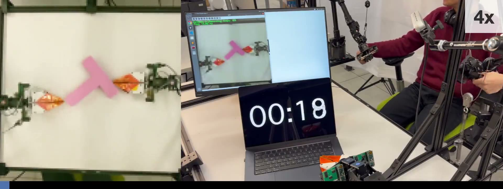
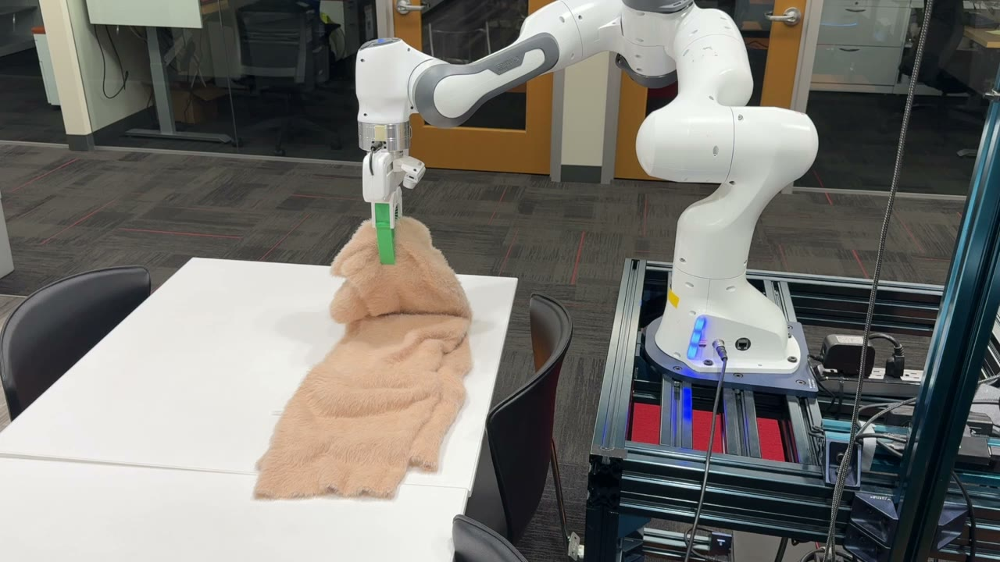
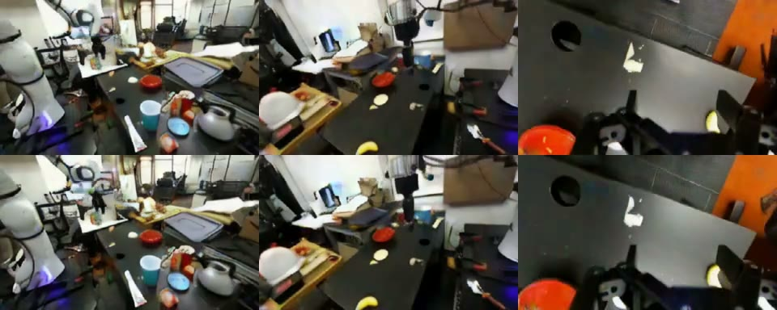

Porting and Optimizing Frontier Robotics Models on AMD ROCm
Across Radeon RDNA3, RDNA4, and Ryzen RDNA3.5 platforms.
Geometry Has the Veto: How RoboRender Turns Simulated Trajectories into Videos a Policy Can Learn From
Simulation keeps the geometry and actions; a video model paints the trajectory in real-world colors.
What Is a Push-In Shot of a Café Worth?
When the camera pushes in, is the bar still where it was? WorldScore breaks that question apart and scores each piece.

A World Without a Physics Engine Still Needs a Ruler
Given one frame and a sequence of actions, play out the next second in pixels, with no physics engine as referee.

Actions Are Points Too: PointWorld Predicts the Next Second on a W7900
State and action speak the same language. From one RGB-D image, predict where every point goes in the next second.

Imagine the Next Second First, Then Let the Robot Act
Let the policy roll out the manipulation in imagination. If the imagination is obedient enough, the ranking can be settled on a GPU first.